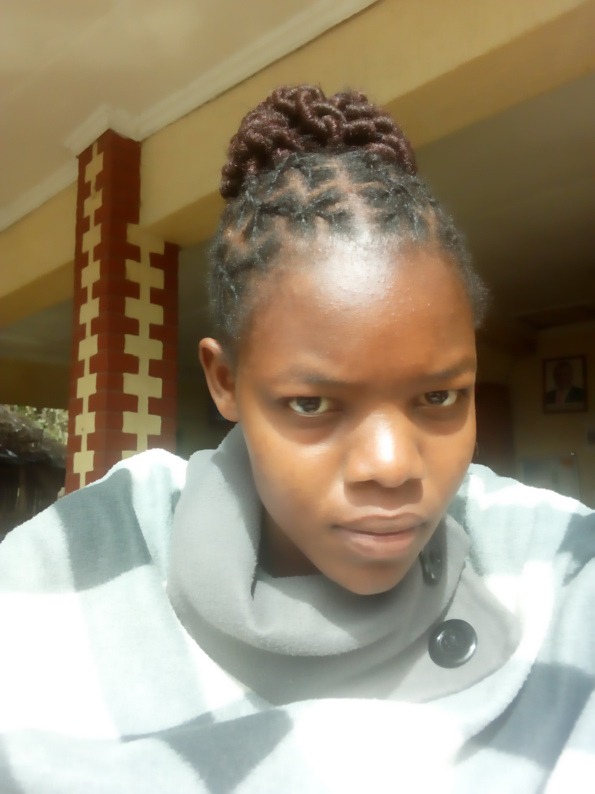

This is my picture
I attended my primary education from the year 2004-2012 and attained a Kenya Certfificat of Primary Education. Also, did my secondary education and finished in the year 2016 attaining KCSE certificate. I graduated in the year 2021 from the university of Masinde Muliro university of Science and Technology with a degree in Bsc in Environmental Science.
I have a three month job experience at Kisii meteorological station where i performed various tasks on data collectin and documentatin using the microsoft office suite
I decided to take a class on programming cause i had been claving to pursue a course in programming for a long time and i needed to know how to code, make my own website.